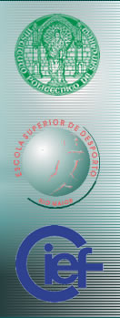

|  |
1ª Conferência de Gestão e Economia do Desporto da Escola Superior de Desporto de Rio Maior /1 st Conference on Sport Management and Economics of the Sport Sciences Higher School of Rio Maior PROGRAMA PROVISÓRIO/PRELIMINARY PROGRAM Rio Maior 5 a 7 de Julho 2002/ 5 and 7 July 2002 5 Julho Sexta-feira /5 July- Friday 8.30 - 9.30 Recepção dos Participantes/Reception of participants 9.30 - Sessão de Abertura/ Opening Ceremony 10.00 - 10.30 - Keynote Speaker: Trevor Slack (University of Alberta, Editor of European Sport Management Quartly): Broadening the geographic scope of sport management: A framework for understanding change in sport organizations in emerging economies 10.30 - Coffee break 11.00 - 13.00 Seccão A: Gestão do Desporto/Section A: Sport Management-I Chairman: José Rodrigues (Director da Escola Superior de Desporto de Rio Maior/ Sport Sciences Higher School of Rio Maior) Keynote Speaker: Gustavo Pires (Faculdade de Motricidade Humana/UTL): A Formação Inicial em Gestão do Desporto/ Initial education in sport management Wendy Frisby (University of British Columbia): The Potentials and Challenges of Conducting Action Research with Sport Organizations Ian Henry (Loughborough University): Comparative Analysis of Sports Policy: Methodological and Epistemological Issues Carlos Barros (Instituto Superior de Economia e Gestão/UTL) and Abel Santos (Escola Superior de Desporto de Rio Maior): Productivity on Sports Training Activities: A DEA Study 13.00 - 15.00 Intervalo para Almoço/ Break Lunch 15.00 - 18.00 Secção B: Economia do Desporto - Section B: Sport Economics-I Chairman: Carlos Barros (Instituto Superior de Economia e Gestão/UTL) Keynote Speaker: Bill Gerrard (University of Leeds): In a league of their own? Can Sports Economists Contribute to the development of Sport Management? Robert Sandy and Peter Sloane (Aberdeen University): Why do US Colleges have Sport Programs - Intercollegiate Sports as Enrollment Management Stefan Szymansky (Imperial College Management Scholl): The invariance principle, prizes and competitive balance Coffee Break Peter Dawson (Internacional Bath University) and Stephen Dobson (Queen's University of Belfast) Managerial Efficiency in English Association Football: Methodology, Measurement and Evaluation Jaume Garcia and Placido Rodriguez (Oviedo University): TV Revenues: Old Solution, New Problems. Bernd Frick and Joachim Prinz (University of Witten) Revenue Sharing Arrangements and theSurvival of Promoted Teams: Empirical Evidence from the European Soccer Leagues. Carlos Barros (Instituto Superior de Economia e Gestão/UTL) and Abel Santos (Escola Superior de Desporto de Rio Maior): Productivity on Sports Training Activities: A DEA Study 6 de Julho, Sábado/Saturday 6 July 9.30 - 13.00 Seccção B: Economia do Desporto - Section B: Sport Economics-II Chairman: Abel Correia (Faculdade de Motricidade Humana/UTL) Leo H. Kahane (California University) and Todd L. Idson (Columbia University): Teammate Effects, Race and Salary in the NBA C.P.Barros (Instituto Superior de Economia e Gestão/UTL) Valuing European Sport Stadiums with the CVM Coffe Breack Bernd Frick (University of Witten): Institutional Change and the Career Duration of Professional Soccer Players: Empirical Evidence from the German Bundesliga Patrick Feehan; David Forrester and Robert Simmons (Salford University): Premier League Soccer: Normal or Inferior Good Holger Preuss ( ): The Evolution of 100 Years Olympic Financing 13.00 - 15.00 Intervalo para Almoço/ Break Lunch 15.00 - 18.00 Secção C: Comunicações Livres/ Section C: Parallel Section Chairman: António Serôdio (Universidade de Trás-os-Montes e Alto Douro) Albino Maria (Director do Departamento de Educação,Cultura e Desporto da CM Rio Maior): Gastar na doença ou investir na saúde/ To Spend Money in Desease or to invest in health J. Viseu & Cláudia Ribeiro (Universidade do Minho): Public Sports Supply: Critical Analyses of Professional and Top-Level Sports Financing According to Economic Efficiency Theory Jorge Soares, Liliana Freitas, Francisco Fernandes, Rui Sá (Universidade da Madeira): O papel das SAD’s no contexto desportivo regional Mário Teixeira (Instituto Nacional do Desporto) e Abel Correia (Faculdade de Motricidade Humana/UTL): Estratégia das Federações Desportivas e o Estado Estudo das Principais Federações Portuguesas nos Ciclos Olímpicos de Sydney e Atenas/ Strategy of Sports Federations and the State - Study of the Main Portuguese Federations within the Olympic Cycles of Sydney and Atenas Coffe Breack Francisco Batista (Escola Superior de Educação Almeida Garret): A importância da administração pública local no desenvolvimento desportivo concelhio Soares, J.; Dias, C.; Anastácio, S.; Neves, E. & Aguiar, M. (Universidade da Madeira): Avaliação do Curso de Educação Física e Desporto: O Percurso Profissional dos Licenciados pela Universidade da Madeira. Fernando Tenreiro (Instituto Nacional do Desporto): Agency Theory - UEFA and FPF - Contract at the Euro 2004 Pedro Raposo (Escola Superior de Desporto de Rio Maior): Social and Economical functions of sport facilities 20.00 Jantar da Conferência/ Conference Dinner 7 de Julho Domingo Sunday 7 July 10H00-12H30 Sport Management-II Chairman: José Alves (Escola Superior de Desporto de Rio Maior) Abel Santos (Escola Superior de Desporto de Rio Maior) and Abel Correia (Faculdade de Motricidade Humana): Strategy of Portuguese Sport Clubs - J.Cadima, H. Fernandes; F. Parente and J. Viseu: Spatial Economy Location Theories Applied to the Location of Physical Activity, Leisure& Health Facilities David Hindley: Evaluating the Utility of the Concept of Governance in Understanding the management and Policy Process of Sports Barrie Houlihan (Loughborough University): Managing Compliance in International Anti-doping Policy Serôdio-Fernandes, A.J. (Universidade de Trás-os-Montes e Alto Douro) : O Associativismo desportivo no Nordeste: Contributo para o Desenvolvimento Sócio-económico da Região Laurence Chalip (University of Texas, Editor of European Sport Management Quartly ) : Beyond Impact: A General Model for Leveraging Sport Events |